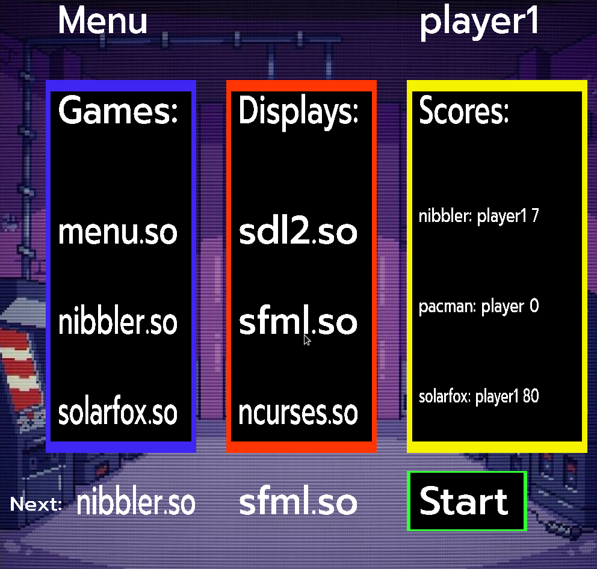

Menu
Description
The menu is a “fake” game where the point is to select the game and the display lib you want play and use, as well as show the highscores of other games. Choose your game and lib, set you name and start the game !
Help
To change the player name click on the current player name and start typing your name, once you have finished press enter to stop modifying the name. No game or lib will change until you click on the start button.
Commands
- Select:
Mouse click: use your mouse to select the game and display lib you want
- Else:
R Key -> Restart the game
N Key -> Switch to next Game
B Key -> Switch to previous Game
L Key -> Switch to next display lib
K Key -> Switch to previous display lib
Esc Key -> Go to menu